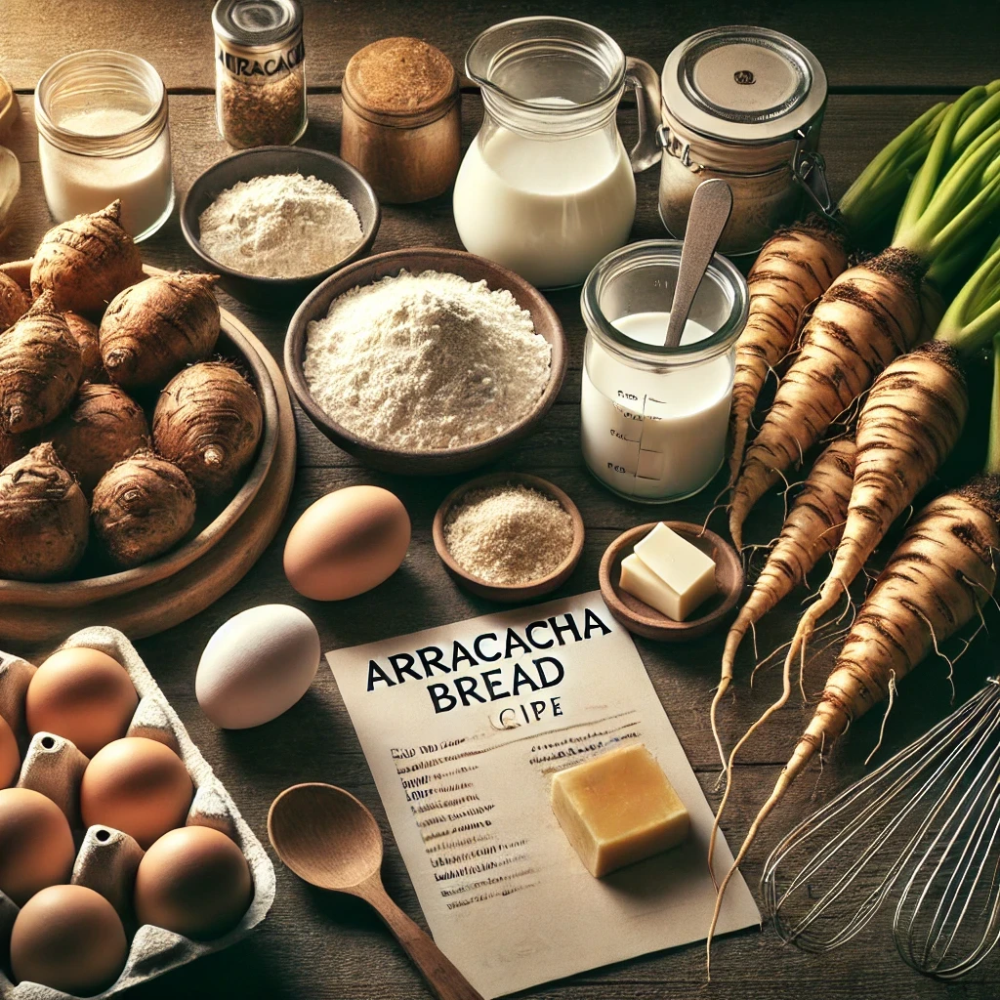
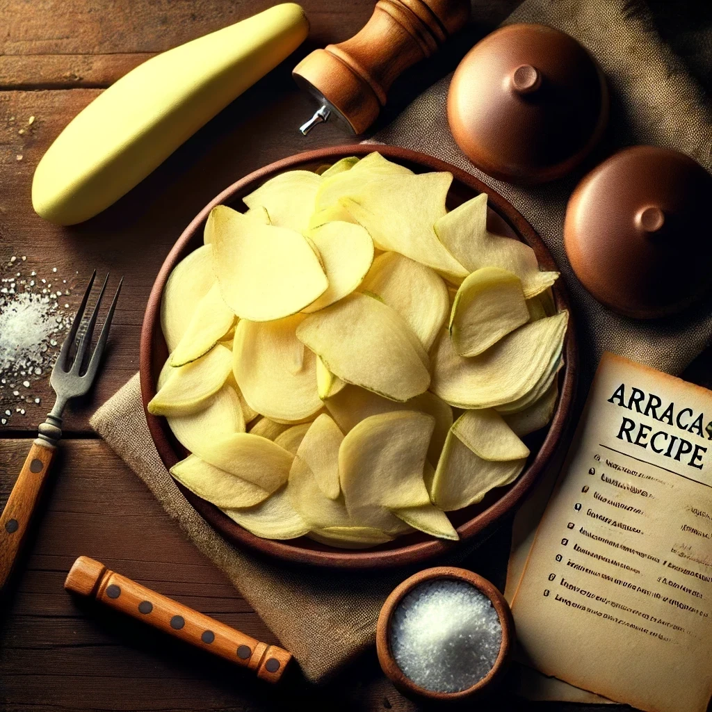
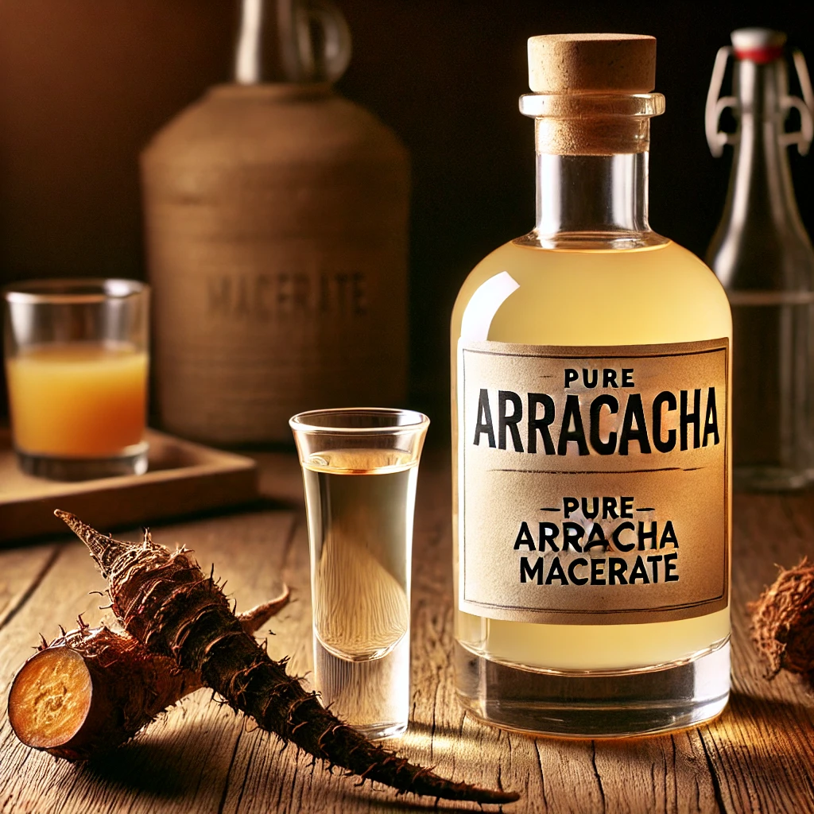

Descubre el poder de la Arracacha
Nutrición y sabor en cada bocado
Información Nutricional de la Arracacha
🌿 Propiedades Nutricionales
- Rica en Carbohidratos Complejos
- Fuente de Fibra Dietética
- Vitaminas del Complejo B
- Vitamina C
- Minerales Esenciales
- Bajo en Grasas y Calorías
🌱 Beneficios para la Salud
- Favorece la Digestión
- Controla el Colesterol
- Apoya el Sistema Inmunológico
- Regula la Presión Arterial
- Promueve la Salud Ósea
- Reduce la Fatiga y el Estrés
Nuestros Productos
Recetas Experimentales
Vive la experiencia de preparar tu propia comida con arracacha

Pan de Arracacha
Ingredientes para preparar pan y recetario. Incluye huevos de corral 100% libres de medicinas.

Chifle de Arracacha
Saborizantes para chifle y arracacha picada lista para freír. Incluye receta para preparación ideal.

Licor de Arracacha
Macerado puro de arracacha para combinar con el jugo de tu fruta favorita.